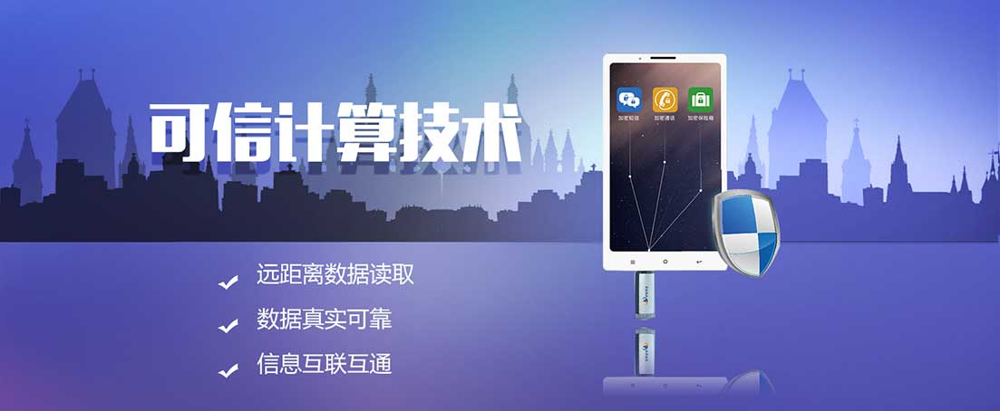

可信计算（Trusted Computing）是一种通过硬件手段保证平台安全性的技术，可信计算能够提供给系统可靠性、可用性和安全性。
可信计算基本思想是在计算机硬件平台上引入安全芯片，着重提供安全核心的密码学功能，通过该安全芯片提供的安全特性来提高终端系统的安全性。
可信计算在国内外都有应用。国外以可信平台模块（TPM）为信任根，而国内将可信密码模块（TCM）作为平台的信任根。公司开发的可信计算产品是以TCM为信任根，将可信逐次传递给Uboot驱动和Linux操作系统，从而形成可信链，然后进行TCS、接口和应用开发，最终实现整个产品的安全可信。